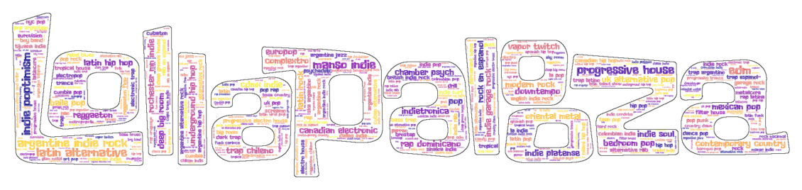

Sistema de recomendación para el Lollapalooza Argentina 2020
Análisis de géneros musicales
Estudiando el festival
Acá hicimos un análisis de todos los géneros blablabla.agregar chamuyo
También lo hicimos separado por día
Día 1
Día 2
Día 3
Análisis de atributos musicales
Top tracks de Spotify
Hicimos el análisis de los top tracks de cada banda en Spotify y....agregar chamuyo
También lo hicimos separado por día
Día 1
Día 2
Día 3
Clusterización de bandas
Algoritmos de aprendizaje automático no supervisados
acá van los clusters y....agregar chamuyo